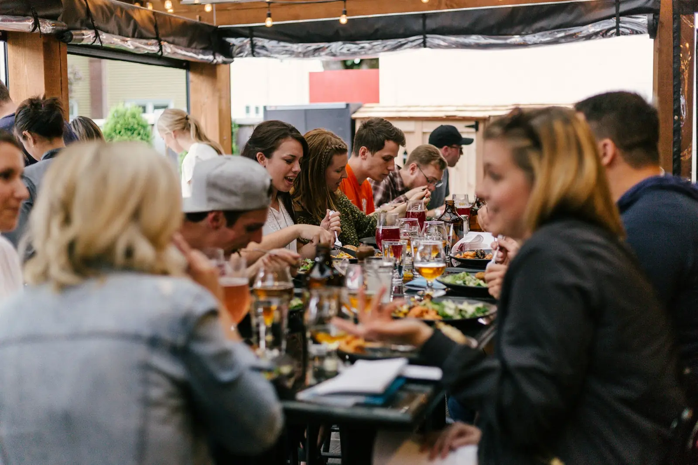

Regional & seasonal
Try our signature dish: slow-braised Heidschnucke lamb – the heath sheep that has shaped this landscape for centuries. Vegetarian and vegan dishes are always on the menu.

Lüneburg · Lüneburg Heath
Good food. Together. Modern North German cooking with produce from the Lüneburg Heath, a warm welcome for all generations, and a play corner for the little ones.
Try our signature dish: slow-braised Heidschnucke lamb – the heath sheep that has shaped this landscape for centuries. Vegetarian and vegan dishes are always on the menu.
Play corner, playground in the garden, kids’ menu, high chairs and baby-changing room. Children are welcome to be children here.
Free parking, e-bike charging, dogs welcome and a beer garden. Ideal after exploring Lüneburg’s old town or the heath in bloom (August–September).
| Monday | Closed |
|---|---|
| Tue – Fri | 11:30 am – 2:30 pm 5 pm – 10 pm |
| Saturday | 11:30 am – 10:30 pm |
| Sunday | 9:30 am – 9 pm Breakfast buffet until noon |